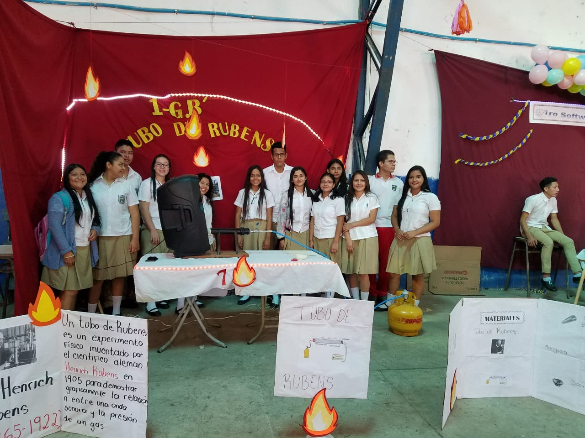

Un “Tubo de Rubens”, es un experimento físico inventado por el científico alemán Heinrich Rubens en 1905 para demostrar gráficamente la relación entre una onda sonora y la presión de un gas. Esto prácticamente fue lo que los alumnos del 1er año General "B" elaboraron.

¿En qué consiste? El dispositivo consiste en un cilindro de metal con perforaciones equidistantes en la parte superior y los extremos sellados. Un extremo es alimentado por un gas inflamable y en el otro extremo se instala una bocina o un generador de frecuencia. Se alimenta el gas y se enciende el que escapa por las perforaciones superiores. Si se emite una onda estacionaria variará la presión interna del gas dependiendo de su ubicación a lo largo del cilindro debido a la compresión y descompresión del gas interno de acuerdo al principio de Bernoulli.
Rueda de la Fortuna
La rueda de la fortuna es una estructura que tiene numerosas cabinas para pasajeros y da una vuelta a 360º específicamente lo que un grupo del 1ro Software "B" recreo mediante una maqueta.

El objetivo de esta era aplicar las leyes de Newton y las energías (cinética y potencial) en el funcionamiento del proyecto.
SMART CITY
Uno de los proyectos más llamativos fue este desarrollado por los alumnos del 2do año General.

Constaba de un cubo de cristal que por dentro tenia luces LED y la óptica hacia ver que ese cubo fuera infinito, seguidamente este contaba con un pedal de bicicleta que generaba energía y también constaba de un pez "robot".
_
_
_
_
_
_
_
_
_
*Arriba en el menú desplegable bajo la sección "Otros Proyectos" encontraras más información sobre lo que otros grupos realizaron.
También encontraras la sección "Multimedia" donde se encuentra un reportaje sobre este evento gracias a CONECTATE, por otra parte; está la sección "Ideas para prox. Proyectos" y si tienes alguna duda "Contáctanos" te manda a una principal red social donde puedes escribirnos.